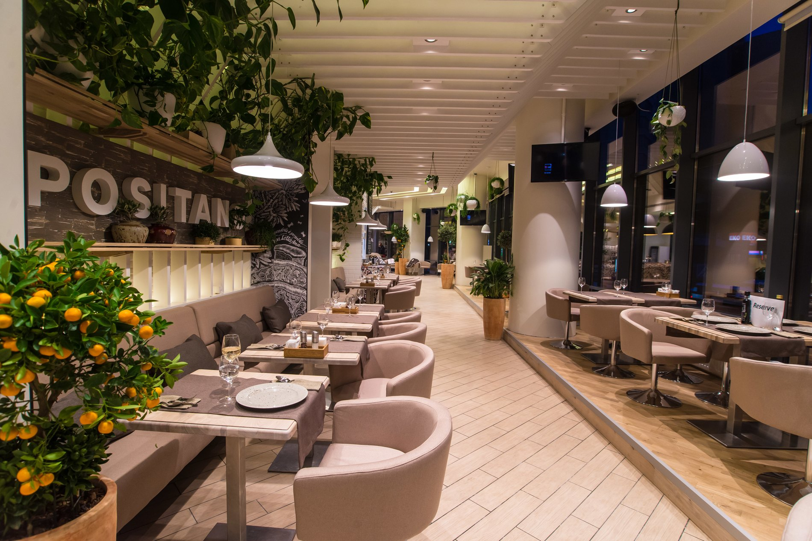
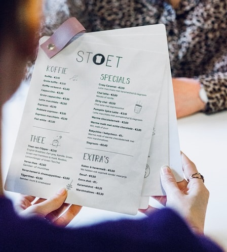

Ресторан Піца у Володі

Про ресторан
Піца у Володі - це затишна піцерія, що знаходиться в самому серці міста. Вона відома своєю смачною піцою та неперевершеним сервісом, які зробили її одним з найулюбленіших місць для перекусу для місцевих жителів та туристів.
Піцерія знаходиться в затишному куточку міста, де завжди панує тепла атмосфера, що робить її ідеальним місцем для зустрічей з друзями та родиною, або для того, щоб просто насолодитися смачною піцею у самотності.
Інтер'єр піцерії допомагає створити відчуття комфорту та затишку. Усі столики та стільці виготовлені з натурального дерева, що надає приміщенню теплого та приємного вигляду. Великі вікна забезпечують достатню кількість природного світла, а теплі відтінки кольорів стін та меблів створюють відчуття затишку та спокою.

Про Меню
Меню піцерії вражає своїм розмаїттям та оригінальністю. Тут ви знайдете широкий вибір піц, від класичних до екзотичних смаків. Усі страви готуються з найкращих інгредієнтів та найсвіжіших продуктів, що гарантує їх високу якість та смакові властивості. У "Піца у Володі" завжди панує тепла та дружня атмосфера, завдяки уважному та доброзичливому персоналу. Індивідуальний підхід до кожного гостя, швидке та якісне обслуговування, допомагають створити приємні спогади